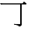

Osa 1
一
yksi
lukutapoja: イチ、ひと-つ
二
kaksi
lukutapoja: ニ、ふた-つ
三
kolme
lukutapoja: サン、みっ-つ
四
neljä
lukutapoja: シ、よん、よっ-つ
五
viisi
lukutapoja: ゴ、いつ-つ
亠
kattilankansi
lukutapoja: トウ
六
kuusi
alakomponentit:
亠,
八, lukutapoja: ロク、むっ-つ
七
seitsemän
lukutapoja: シチ、なな、なな-つ
八
kahdeksan
lukutapoja: ハチ、やっ-つ
九
yhdeksän
lukutapoja: キュウ、ク、ここの-つ
十
kymmenen
lukutapoja: ジュウ、とお
Osa 2
人
ihminen
lukutapoja: ニン、ジン、ひと
大
suuri
lukutapoja: ダイ、おお-きい
犬
koira
lukutapoja: いぬ
小
pieni
lukutapoja: ショウ、ちい-さい

lukutapoja: -
口
suu
lukutapoja: コウ、くち
可
mahdollinen
alakomponentit:
,
口, lukutapoja: カ
亻
ihminen (人 kun tämä komponentti on merkin vasemmalla puolella),
-
何
mikä
alakomponentit:
亻,
可, lukutapoja: なに、なん
寸
vanha pituusmitta sun, n. 3 cm
lukutapoja: スン
土
maa, maaperä
lukutapoja: ド、つち
寺
(buddhalainen) temppeli
alakomponentit:
土,
寸, lukutapoja: ジ,てら
日
aurinko, päivä
lukutapoja: ニチ、ひ
時
aika, tunti
alakomponentit:
日,
寺, lukutapoja: ジ、とき
刀
veitsi, miekka
lukutapoja: トウ、かたな
分
minuutti, ymmärtää, osa
alakomponentit:
八,
刀, lukutapoja: フン、プン、ブン、わ-かる
半
puolikas
lukutapoja: ハン
日
aurinko, päivä
lukutapoja: ニチ、ひ
月
kuu, kuukausi
lukutapoja: ガツ、ゲツ、つき
年
vuosi
lukutapoja: ネン、とし
生
elämä, syntymä
lukutapoja: セイ、い-きる、う-まれる、う-まれ
才
ikävuosi
lukutapoja: サイ
口
suu
lukutapoja: コウ、くち
目
silmä
lukutapoja: モク、め
耳
korva
lukutapoja: みみ
手
käsi
lukutapoja: シュ、て
龰
pysähtyä (止, variaatio kun komponenttina alhaalla),
-
足
jalka, riittää
alakomponentit:
口,
龰, lukutapoja: ソク、あし、た-りる
本
kirja; alkuperä
alakomponentit:
木,
一, lukutapoja: ホン、もと
中
keskellä, sisällä
lukutapoja: チュウ、ジュウ、なか
言
puhua; sana,
-
語
sana, kieli
alakomponentit:
言,
五,
口, lukutapoja: ゴ
王
kuningas,
-
玉
pallo; jalokivi
alakomponentit:
丶,
王囗
aitaus,
-
国
valtio, maa
alakomponentit:
囗,
玉, lukutapoja: コク、くに
丿
katakana no,
-
白
valkoinen
alakomponentit:
丿,
日, lukutapoja: しろ、しろい
百
sata
alakomponentit:
一,
白, lukutapoja: ヒャク、ビャク、ぴゃく
千
tuhat
lukutapoja: セン、ち
万
kymmenentuhatta
lukutapoja: マン
円
jeni
lukutapoja: エン
Osa 3
火
tuli
lukutapoja: カ、ひ
水
vesi
lukutapoja: スイ,みず
木
puu
lukutapoja: モク、き
金
kulta; metalli; raha,
-
入
mennä sisään
lukutapoja: いり、いれる、はいる
出
mennä ulos
lukutapoja: で、でる、だす
門
portti,
-
聞
kuulla; kuunnella; kysyä
alakomponentit:
門,
耳見
nähdä; katsoa,
-
来
tulla; seuraava,
-
丁
katu, kortteli,
-
亍
ottaa pieniä askelia
alakomponentit:
一,
丁彳
kävelevä ihminen,
-
行
mennä
alakomponentit:
彳,
亍, lukutapoja: い-く
舌
kieli,
-
話
puhe; tarina
alakomponentit:
言,
舌